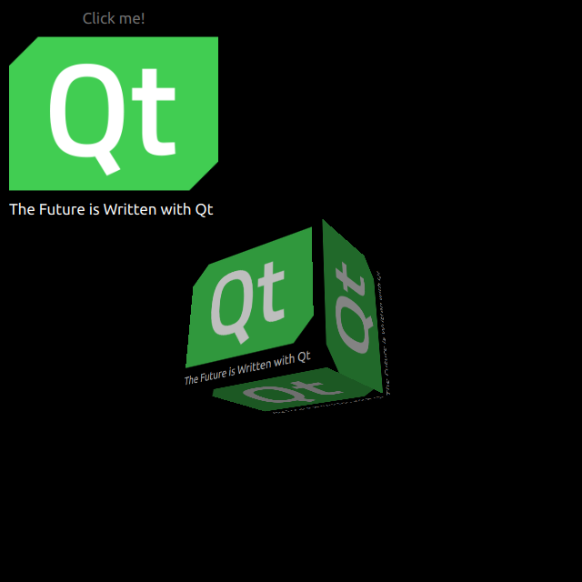

Qt Quick 3D - HelloCube Example
Demonstrates how to render 2D and 3D objects together in Qt Quick 3D.

HelloCube demonstrates how to render a 3D cube with 2D items in Qt Quick 3D.
Draw 2D Items
We set up the entire scene in the main.qml file.
To be able to use the types in the QtQuick3D module, we must import it:
import QtQuick3D 1.15
We define simple QtQuick Items with an Image and a Text on a Rectangle.
Image { anchors.fill: parent source: "qt_logo.png" } Text { id: text anchors.bottom: parent.bottom anchors.left: parent.left color: "white" font.pixelSize: 17 text: qsTr("The Future is Written with Qt") }
This simple rectangle has two animations for flipping vertically.
transform: Rotation { id: rotation origin.x: qt_logo.width / 2 origin.y: qt_logo.height / 2 axis { x: 1; y: 0; z: 0 } } PropertyAnimation { id: flip1 target: rotation property: "angle" duration: 600 to: 180 from: 0 } PropertyAnimation { id: flip2 target: rotation property: "angle" duration: 600 to: 360 from: 180 }
Draw a 3D Cube
Drawing a cube is very simple. After defining a Camera, and a Light, we make a cube with a built-in Model. In this example, we render previous 2D Rectangle on this cube surface as a diffuse Texture. Back to the properties of the Rectangle, you can see layer.enabled. This property makes the 2D item as a offscreen surface.
layer.enabled: true id: cube visible: true position: Qt.vector3d(0, 0, 0) source: "#Cube" materials: [ DefaultMaterial { diffuseMap: Texture { id: texture sourceItem: qt_logo } } ] eulerRotation.y: 90
Files:
Images:
{kind=link}